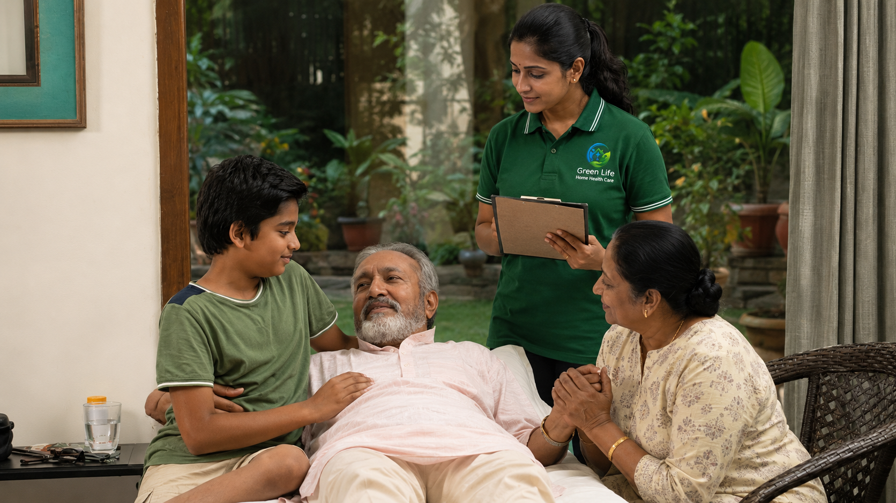
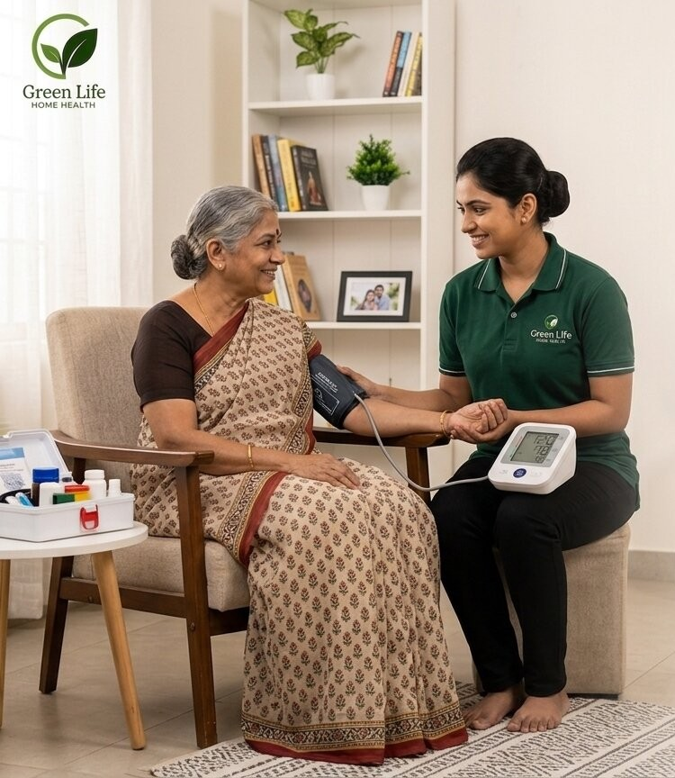
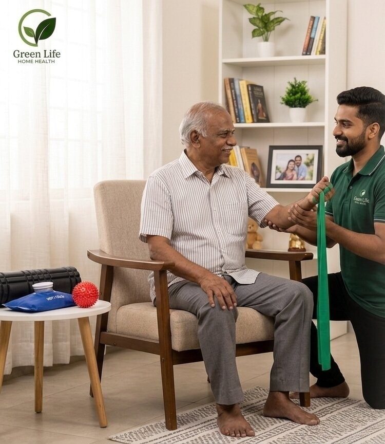
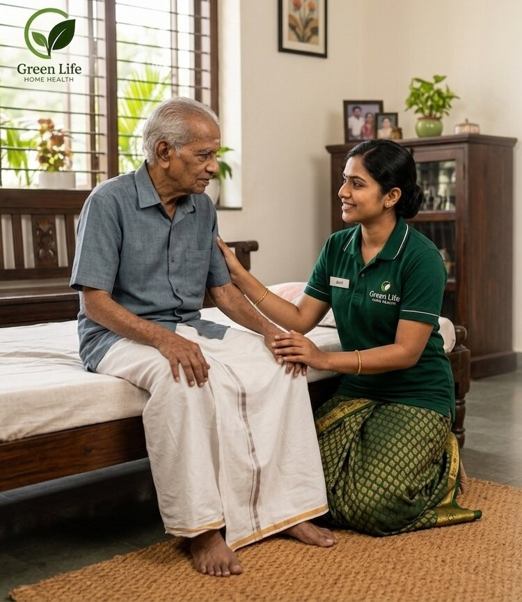
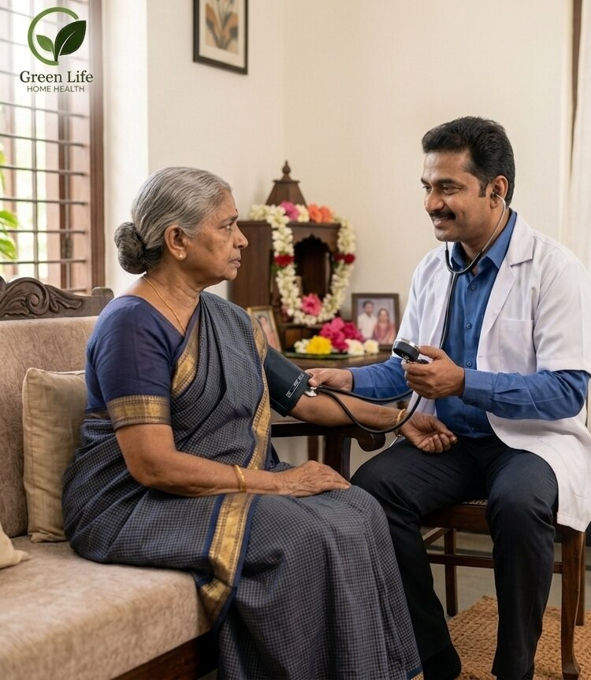
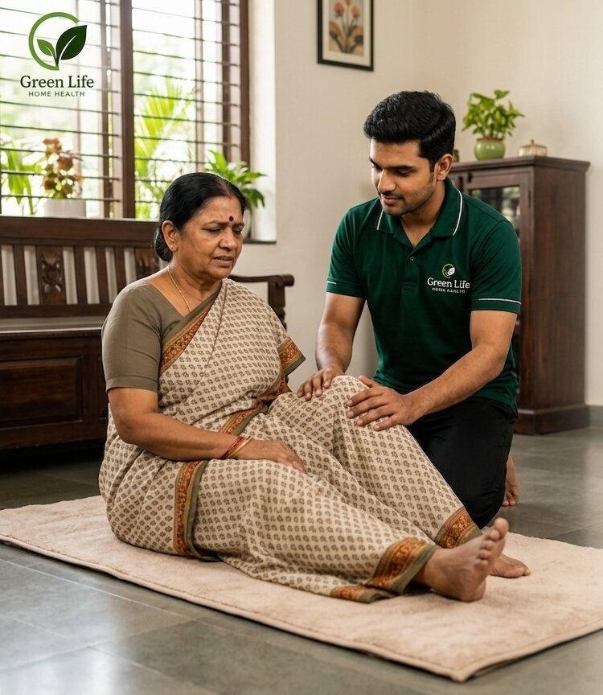
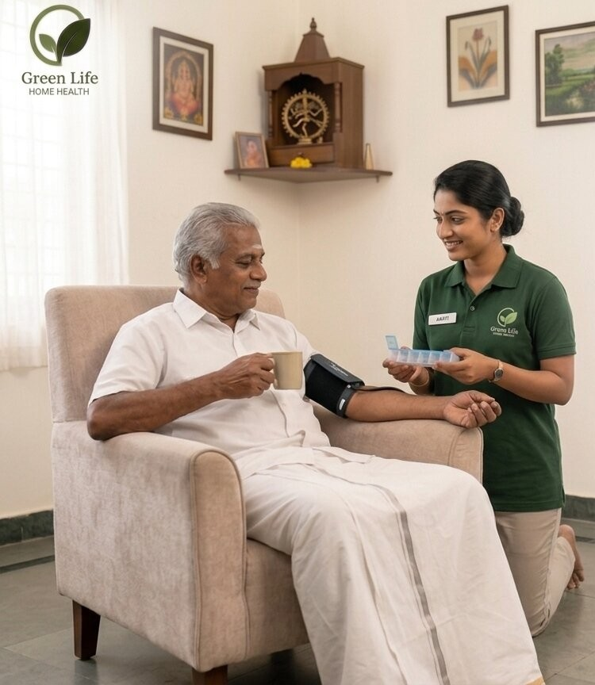
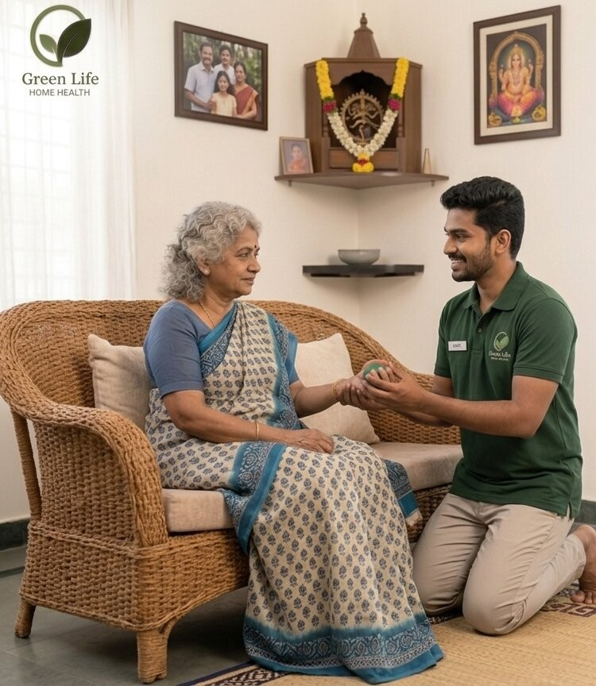
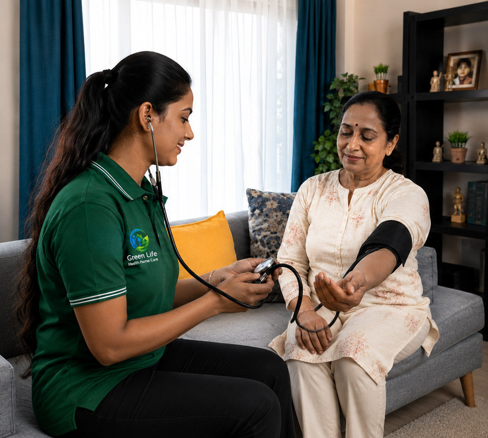

Gallery
Real-world home care moments
A clean look at care settings, nursing support, physiotherapy and patient assistance at home.









A clean look at care settings, nursing support, physiotherapy and patient assistance at home.








